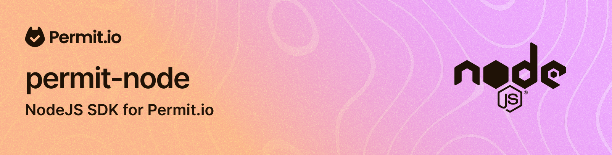

Preparing for 3.0? Read the 2.x-to-3.0 migration guide and customer agent skill.
Node.js client library for the Permit.io full-stack permissions platform.
Node.js 22.13.0 or newer is supported, including later major versions.
CI retains the 22.13.0 and 24.0.0 floors and tests current releases of Node 22, 24 and 26.
The package provides both
CommonJS (require) and ES module (import) entry points.
npm install permitio
See the 3.0 migration guide for grouped API replacements and removed exports.
Use the Node version in .nvmrc and pnpm 12.8.1, pinned in package.json.
Install pnpm with npm install --global --ignore-scripts pnpm@12.8.1. Then run:
pnpm audit --audit-level=moderate
pnpm install --frozen-lockfile
pnpm hooks:install
pnpm verify
Installs disable lifecycle scripts, so builds and hook setup are explicit. Run pnpm hooks:install
to install prek for the current checkout without changing sibling worktree hooks. New dependency
versions must be at least 24 hours old; direct dependencies are saved with exact versions.
pnpm test runs the unit and module-import suites without a Permit backend.
pnpm test:codegen tests the generator guard without Java; pnpm check:codegen also
regenerates the fixture and requires Java 17. pnpm check:openapi regenerates the reviewed
production snapshot twice and verifies committed output. See OpenAPI generation
and its migration inventory.
Test commands save native Vitest reports and execution summaries in .test-results/. The gate
requires collected files and executed tests in every selected suite, and rejects unexpected skips.
Backend commands exit with UNAVAILABLE and a nonzero status when PDP_API_KEY is absent.
Absent optional organization/project keys and disabled direct OPA checks are named UNAVAILABLE
limitations; a supplied key with the wrong scope fails. The known ABAC decision test remains
BLOCKED by PER-16553. A run with these limitations reports PARTIAL, with passed execution counted
separately. CI runs backend checks against the cloud control plane and a pinned local PDP; fork and
Dependabot runs explicitly report unavailable backend coverage.
pnpm coverage measures all authored runtime TypeScript, including API wrappers, enforcement,
configuration and utilities. Generated OpenAPI clients and test files are excluded. Text, HTML,
LCOV and JSON summaries are saved in coverage/; this measured scope has no percentage threshold.
The shared candidate workflow builds permitio@3.0.0 from the committed version, validates the
package metadata and file allowlist, and records its archive hash and source identity. Required
quality checks cover lint, strict types, local unit/tooling tests, generated contracts, workflow
security, and external packed ESM/CommonJS customers on Node 22.13.0, 24.0.0, and current
Node 22, 24 and 26 releases. The customer
fixtures also compile with TypeScript 6 and 7 under Node16, NodeNext and Bundler resolution.
Both runtime entry points expose named exports; the ESM declaration facade preserves shared
class identity with CommonJS. Dependency security scans the same archive on both Node floors.
The release workflow normalizes semantic-version tags, including an optional v prefix, and
requires the resulting version to match the reviewed package version.
Its production job downloads and revalidates the tested/scanned archive, then uses npm Trusted
Publishing with lifecycle scripts disabled. It does not build, change the version or repack.
Release candidates use the rc distribution tag.
Publication is currently blocked. SDK71's local release evidence has 13 unproved operations,
its releaseReady remains false, and the shared target is unavailable (PER-16345).
Shared acceptance and Curtain Call (PER-16561, PER-16574) must provide their reviewed acceptance
contract before publication can proceed. Ordinary PR quality checks do not claim this external
acceptance.
Repository check, production approval, release tag and npm publisher settings require the separate owner rollout described in Contributing. Workflow source alone does not configure those protections. Actual merge, tag creation and publication also require separate authorization.
See Contributing for scan commands and reports.
The constructor accepts IPermitOptions. Omitted values use environment variables and SDK
defaults. A nonempty token is required after PERMIT_API_KEY fallback; tokens are opaque strings
and cannot contain whitespace or control characters. PDP and REST URLs must be absolute HTTP(S)
URLs without literal query (?) or fragment (#) components, including empty delimiters.
Path prefixes and encoded path characters such as %3F and %23 remain supported. Omitted
pdp and apiUrl use the existing PERMIT_PDP_URL and PERMIT_API_URL defaults. Invalid
settings throw before the SDK creates a logger or transport, with errors that omit caller values.
In 3.0, permit.config settings and their SDK-owned nested objects are frozen. Configure tokens,
URLs, logging, tenancy and retry settings at construction time. Supplied Axios instances and
retry callbacks remain caller-owned and live; their defaults, interceptors and mutable callback
state can still change.
A supplied apiContext is copied into an independent SDK-owned context, preserving its initial
permissions and selection. It no longer retains the supplied object's identity. Make later
context changes through permit.config.apiContext. Concurrent first REST calls share one scope
lookup per SDK. A failed initial lookup rejects its waiting calls and allows a later retry. Invalid
hierarchical scope replies are rejected atomically, and late replies preserve explicit context
changes.
The SDK includes built-in retry support for transient failures. Retries are opt-in:
they are off unless you pass a retry config (or retry: { enabled: true }).
When enabled, the defaults are:
408, 429, 500, 502, 503, 504Retry-After headers for rate limiting (429)maxRetries is the number of retries after the initial request, so the default of 3 means up to 4 total requests.
Behavioral note
- Retries are opt-in — providing a
retryconfig object turns them on; omitting it (or passingretry: false) leaves them off.- When enabled, PDP/OPA calls additionally retry
POSTbecause authorization queries are idempotent.- SDK retries never repeat REST
POSTorPATCH, even when listed inretryMethods. The default idempotent methods remainGET,HEAD,OPTIONS,PUTandDELETE.- Cancellation and invalid request configuration are never retried, even with a custom predicate. Unclassified response-less errors are not retried by the default predicate.
Retry options are checked when the SDK is constructed. Counts must be nonnegative safe integers; delays must be finite milliseconds from 0 through 2,147,483,647; the backoff multiplier must be finite and at least 1. Retry predicates must return a boolean. Invalid configuration fails with an actionable error instead of silently accepting a malformed policy.
For 3.0, failed attempts and backoff consume one Axios timeout budget. Each retry gets the
remaining timeout, and a delay that exhausts the budget prevents another attempt. The SDK timeout
option applies to PDP/OPA; REST and Elements use the supplied Axios instance's timeout. A timeout
of 0 disables the deadline; omitted SDK timeouts preserve caller defaults. This changes the earlier
behavior that reset the full timeout for every retry. Axios adapters must honor the timeout;
arbitrary caller interceptors or adapters are not interrupted by an SDK wall-clock deadline.
A supplied axiosInstance serves REST and Elements; opaAxiosInstance serves OPA. The SDK keeps
these caller instances unchanged and delegates every attempt through their live adapters,
transforms and interceptors, including when the SDK and supplied Axios client use different
CommonJS/ESM entry points. Caller default headers remain live on every attempt. Two SDK instances
can share a client while retaining separate routes, Bearer tokens, logging and SDK retry policies.
SDK requests explicitly allow their configured absolute URLs even when the caller default
allowAbsoluteUrls is false, so a caller base URL cannot prefix or reroute an SDK destination.
Direct caller requests retain that caller restriction and remain usable and acquire no SDK retries.
Default Basic credentials cannot replace an explicit
SDK Bearer token. Intentional caller hooks can still rewrite request configuration, including
headers and transforms; caller-owned retry or redirect behavior remains the caller's responsibility.
For 3.0, the SDK serializes enforcement request bodies before dispatch so legal JSON dictionary
keys such as __proto__ and constructor survive Axios merging. A supplied OPA request
interceptor or transform receives JSON text, including the { input: ... } envelope.
To edit it, parse the text, update the parsed object, and return serialized JSON. Earlier hooks
that expected a raw object must be updated. Direct caller requests retain their own data shape.
Circular references and unsupported JSON values raise a contextual PermitError before HTTP;
explicit non-throwing authorization mode retains its deny result. The raw serialization exception
and input are omitted from diagnostics.
PDP requests use a separate internal transport. There are no SDK registrations on supplied instances to dispose of.
import { Permit } from 'permitio';
// Retries are off by default (opt-in)
const permitDefault = new Permit({ token: 'your-api-key' });
// Enable with custom retry configuration
const permitCustom = new Permit({
token: 'your-api-key',
retry: {
maxRetries: 5,
retryDelay: 500, // Initial delay in ms
backoffMultiplier: 2, // Exponential backoff multiplier
maxDelay: 30000, // Maximum delay cap
},
});
// Explicitly disable retry
const permitNoRetry = new Permit({
token: 'your-api-key',
retry: false,
});
// Different config for PDP vs REST API
const permitPdp = new Permit({
token: 'your-api-key',
retry: { maxRetries: 3 },
pdpRetry: { maxRetries: 5 },
});
log.level controls the SDK's log level (default: warn). Set it to debug to include HTTP
request and response diagnostics, or silent to disable SDK logs. PERMIT_LOG_LEVEL supplies
the default when log.level is omitted.
Logs are JSON lines by default. Set log.json: false for pretty text. When log.json is
omitted, PERMIT_LOG_JSON supplies the default: false selects pretty text, while true, an
unset variable, or any other value keeps JSON lines. The variable ignores letter case and
surrounding whitespace. An explicit log.json setting always overrides the environment variable.
This is a breaking logging change: explicit log.json: false produced JSON in 2.x and selects
pretty text in 3.0. Update log parsers, or set log.json: true to retain JSON output.
Pretty output uses an in-process synchronous stream without worker threads. Writes run on the
calling thread, so blocked stdout can delay the application. Prefer the default JSON output for
production log collection. SDK initialization logs do not include the API key or serialized
configuration.
import { Permit } from 'permitio';
const permit = new Permit({
token: process.env.PERMIT_API_KEY,
log: { level: 'debug', json: false },
});
With the default throwOnError: true, a PDP response with an unexpected status code, or a 200
response with a body the SDK cannot read, throws PermitPDPStatusError, a subclass of
PermitConnectionError. It carries the HTTP statusCode and a bounded, sanitized responseBody.
Transport failures, such as refused connections or timeouts, throw PermitConnectionError with
a safe cause and transport code when available. Match errors with instanceof,
not their name or message, and check the more specific status error first:
import { PermitConnectionError, PermitPDPStatusError } from 'permitio';
try {
await permit.check('user-1', 'read', 'document:one');
} catch (error) {
if (error instanceof PermitPDPStatusError) {
console.error('PDP HTTP status:', error.statusCode);
} else if (error instanceof PermitConnectionError) {
console.error('PDP connection failed');
} else {
throw error;
}
}
REST failures throw named PermitApiError errors.
The SDK accepts message, detail (including validation-error arrays), and text error bodies;
missing descriptions fall back to the HTTP status or transport failure. status, code and a
detached safe cause retain failure metadata. API-key scope failures use PermitContextError
with the same safe metadata.
These are deliberate 3.0 error-property changes. PermitApiError.originalError is a detached Axios
snapshot; response.data and formattedAxiosError.error have type unknown after redaction.
PermitApiError no longer takes a response-body type parameter; narrow the sanitized data before use.
request is always undefined. Snapshots omit request bodies, parameters, socket objects, hooks,
original stacks and raw causes. Response diagnostics keep only message, detail, msg,
error_code, code and errors; nested values, item counts and text lengths are bounded.
Request header values remain redacted except known protocol/SDK headers. Response header values
are redacted except content type, content length and retry timing. Credential URL components
(user information, query values and fragments) are removed. Known request credentials and private
values are scrubbed from error descriptions; oversized or deeply nested requests cause descriptions
to be redacted. Failures from caller adapters, interceptors and retry hooks follow the same rules;
uninspectable primitive rejections use a useful operation fallback. Credentials and identity/permission
attributes are omitted from JSON and pretty
SDK logs, including successful authorization calls.
These rules apply to check, bulkCheck, getUserPermissions, checkAllTenants,
getAuthorizedUsers, getUserTenants, and filterObjects.
PDP responses are validated before authorization data reaches the caller. Direct PDP responses
and OPA result envelopes are supported. Decisions must be literal booleans; bulk results must
contain exactly one decision for each requested position. An empty bulk request requires an empty
result. Every all-tenant entry must have allow: true and a tenant with a string key; a denied or
malformed entry invalidates the whole result. A legacy result boolean alongside allow is
additive metadata and does not override the decision.
Permission entries must contain string arrays when permissions or roles are supplied. Tenant
and resource details require string keys, resources also require a string type, and supplied
attributes must be objects. The SDK applies the PDP's documented defaults: missing permissions
become [], missing attributes become {}, and nullable optional roles/tenant/resource fields are
omitted. Null permissions or attributes are invalid. Extra fields are retained. Dictionary identifiers
such as result, permissions, and __proto__ remain valid; a valid direct map takes precedence
over interpreting it as an OPA envelope.
These are deliberate next-major response contract changes: malformed responses that previously
escaped as truthy values, incomplete bulk arrays, or unchecked permission/tenant objects now fail.
useOpa: true is supported by check() only; bulk and permission calls reject it under the same
error policy instead of ignoring it. Per-call timeout: 0 disables the timeout.
With throwOnError: false, failures, including an invalid resource string, return false for
check, one false per input for bulkCheck, {} for getUserPermissions, and [] for
checkAllTenants. The first three methods also accept per-call error-policy overrides;
checkAllTenants uses the SDK setting.
getUserPermissions(user, tenants?, resources?, resourceTypes?, config?) accepts request context
in its existing fifth argument: { context: { requestFlag: true }, timeout: 1000 }. Request values
override the internal global context. A general CheckConfig does not accept a context option;
other methods receive context as their own argument.
getAuthorizedUsers(action, resource, context?, config?) queries /authorized_users, published
by both container and cloud PDP contracts. It returns the complete { resource, tenant, users }
result, with each user's assignments retaining user, tenant, resource, and role. Legal
own dictionary keys and additive response fields are preserved. Malformed results invalidate the
whole response. A resource type or type:key string follows the same tenant defaults as check.
getUserTenants(user, context?, config?) queries /user-tenants on a compatible container PDP.
It returns role-derived tenant details; membership without a relevant role does not establish a
positive result. Missing tenant attributes default to {}. The cloud PDP contract does not publish
this endpoint, and no cloud runtime support is claimed. HTTP 404 raises an actionable capability
error regardless of throwOnError; it does not guess which PDP host is configured.
filterObjects(user, action, objects, context?, config?) performs one supported bulk check and
returns the authorized original objects in input order, preserving duplicates, extra fields and
object identity. Pass a dense readonly array of resources. Only type, key, tenant, and
attributes are sent as resource fields; extra application fields remain on returned objects.
Each object's optional context is sent as top-level check context with precedence global,
then call, then object. A synchronous array snapshot keeps results aligned if the caller changes
the array while the request is pending. Sparse or undefined slots reject before HTTP. Empty input
returns [] without HTTP after validating options.
const permissions = await permit.getUserPermissions('alice', undefined, undefined, undefined, {
context: { requestFlag: true },
});
const authorized = await permit.getAuthorizedUsers('read', 'document:report', {
requestFlag: true,
});
const tenants = await permit.getUserTenants('alice');
const visible = await permit.filterObjects('alice', 'read', [
{ type: 'document', key: 'report', title: 'Report', context: { requestFlag: true } },
]);
The new discovery and filtering methods reject useOpa: true regardless of the error policy,
including an empty filtering call. Operational or malformed-response failures follow normal
throwOnError: non-throwing mode returns [] for tenant discovery/filtering and a normalized empty
{ resource, tenant, users: {} } for authorized users. No partial authorization data is returned.
Existing permission-query and bulk OPA error policies remain unchanged. checkAllTenants is
retained; future deprecation planning does not remove it here. URL checking and AuthZEN remain
deferred. Internal context transforms are not activated by these methods.
permit.api.users.list returns the full PaginatedResultUserRead envelope. Pass
searchOperator: 'contains', 'startswith' or 'endswith' to match user keys, emails
and names. Omitting it leaves the API default of contains. Search, role and pagination
options can be combined; role: '' selects users without roles.
const users = await permit.api.users.list({
search: 'alice',
searchOperator: 'startswith',
includeResourceInstanceRoles: true,
page: 1,
perPage: 20,
});
console.log(users.total_count, users.data[0]?.associated_tenants);
includeResourceInstanceRoles defaults to false at the API. When true, resource roles
appear in each associated tenant's resource_instance_roles, with resource,
resource_instance and role fields. Both flag values retain the same paginated result.
permit.api.userInvites manages API-key facts invites through create, list, get,
update, delete and approve. Calls use the selected environment on apiUrl, including
when proxyFactsViaPdp is enabled. These methods store and approve facts; they do not send
invitation mail and have no waitForSync() method or PDP synchronization guarantee.
const invite = await permit.api.userInvites.create({
key: null,
status: 'pending',
email: 'invitee@example.com',
first_name: null,
last_name: null,
role_id: role.id,
tenant_id: tenant.id,
resource_instance_id: null,
});
const page = await permit.api.userInvites.list({ tenant: tenant.key, page: 1, perPage: 20 });
const user = await permit.api.userInvites.approve(invite.id, {
email: invite.email,
key: 'approved-user',
attributes: null,
});
console.log(page.total_count, user.key);
Creation and update require every editable field, including the four nullable fields shown
above. update requires this full body despite using PATCH. Use internal UUIDs for role_id,
tenant_id and a non-null resource_instance_id; null selects a tenant role invite. Setting
status alone does not grant membership or roles. get, update, delete and approve use
the invite's internal ID, without user-key lookup.
list accepts role and tenant keys or IDs, text search, page and perPage. It returns the
complete PaginatedResultElementsUserInviteRead page, preserving nullable fields and counts.
page_count, when present, is the number of rows on the current page. The SDK's list defaults
are page 1 and perPage 100. UserInviteStatus exposes the pending and approved values.
Approval requires the matching email, final user key and nullable attributes. It creates or
reuses the user, adds tenant membership and grants the invite's role. It returns
UserInviteApprovalRead, whose optional names and attributes can be null. An optional attribute
type argument is a caller assertion of the response shape, without validation or write inference;
approval does not guarantee replacing an existing user's profile attributes. HTTP 400 approval
refusals retain safe status, transport code and route details with generic guidance; remote text
and response bodies are omitted because they can contain another invite's stored email.
Other failures use the existing API diagnostics. Deleting an invite resolves to undefined and
does not revoke membership or roles created by approval.
permit.api.tenants.list() returns a tenant array. Pass includeTotalCount: true to keep the
complete API page, including data, total_count and optional page_count. False or omitted
flags preserve the array result. Search, page and perPage are forwarded without new defaults.
interface TenantAttributes {
region: string;
}
const tenants = await permit.api.tenants.list<TenantAttributes>();
const page = await permit.api.tenants.list<TenantAttributes>({
includeTotalCount: true,
search: 'east',
page: 1,
perPage: 20,
});
console.log(tenants[0]?.attributes?.region, page.total_count, page.data);
A dynamic or optional boolean flag produces a union of the array and page types; narrow with
Array.isArray(result) before reading page metadata. The attribute type is optional and remains
a caller assertion of server data. waitForSync() clones support the same flag and types.
User, tenant and resource-instance reads accept an optional per-call attribute type. The default
is object, and attributes remains optional. This type describes the server data you expect;
it does not validate responses or infer attributes from write requests.
interface UserAttributes {
department: string;
note: string | null;
}
const user = await permit.api.users.get<UserAttributes>('alice');
const users = await permit.api.users.list<UserAttributes>({ search: 'alice' });
const synced = await permit.api.users.sync<UserAttributes>({ key: 'alice' });
console.log(user.attributes?.department, users.data[0]?.attributes?.note, synced.created);
The type also flows through getByKey, getById, create, update and waitForSync() clones.
Tenant list/read/create/update methods select tenant attributes; addUser and listTenantUsers
select user attributes. Resource-instance list, listDetailed and read/create/update methods
select instance attributes. Lists keep their existing array or paginated envelope, and sync keeps
its { user, created } result. ResourceRead describes resource schema definitions and has no
attribute-data type parameter. Role assignment and other nested partial models are unchanged.
permit.api.groups supports the eight GA core operations: create, delete, list, get,
assignUser, removeUser, assignRole, and removeRole. list and get use the direct Groups
endpoints. Pass a qualified resource:instance key (such as team:support) or an internal group
instance ID to identify a group.
Create and assignment calls return GroupRead, which contains the group and membership fields.
Direct reads return GroupReadSchema, which also contains id. list always returns the full
PaginatedResultGroupReadSchema envelope: data, total_count, and optional page_count.
It accepts tenant, resource, search, page, and perPage; pagination defaults to page 1
with 100 rows per page.
// The group resource type, user, tenant, target resource instance, and role already exist.
const groupKey = 'team:support';
await permit.api.groups.create({
group_resource_type_key: 'team',
group_instance_key: 'support',
group_tenant: 'east',
});
await permit.api.groups.assignUser(groupKey, 'alice', { tenant: 'east' });
const grant = {
role: 'reader',
resource: 'document',
resource_instance: 'quarterly-report',
tenant: 'east',
};
await permit.api.groups.assignRole(groupKey, grant);
const page = await permit.api.groups.list({ tenant: 'east', page: 1, perPage: 20 });
console.log(page.data, page.total_count);
await permit.api.groups.removeRole(groupKey, grant);
await permit.api.groups.removeUser(groupKey, 'alice', { tenant: 'east' });
await permit.api.groups.delete(groupKey);
Group role grants apply through ReBAC relationships and role derivation. Members inherit the
granted resource role; revoking the grant or removing membership removes that inheritance after
policy and facts synchronization. Both adding and removing a user require the tenant JSON body.
Role assignment and removal require role, resource, resource_instance, and tenant.
permit.api.tenants.addUser(tenantKeyOrId, userData) creates a new user and associates it
with an existing tenant. Pass UserCreate data with a key; no role assignment is required.
The backend rejects an already-existing user. This method always uses the control-plane API,
even with proxyFactsViaPdp or waitForSync; its response does not guarantee PDP synchronization.
await permit.api.tenants.addUser('east', { key: 'new-user' });
const tuples = await permit.api.relationshipTuples.listDetailed({ tenant: 'east' });
const instances = await permit.api.resourceInstances.listDetailed({
tenant: 'east',
resource: 'document',
search: ['report'],
page: 1,
perPage: 20,
});
const assignments = await permit.api.roleAssignments.listDetailed({ user: 'new-user' });
console.log(tuples.data, instances.total_count, assignments.page_count);
const refresh = await permit.api.pdps.refresh({ reason: 'Reload external data' });
console.log(refresh.update_id, refresh.pdp_ids);
Each listDetailed uses the dedicated control-plane /detailed endpoint, even when facts
proxying or waitForSync is enabled, and returns its full paginated
envelope, including nested details, total_count, and optional page_count. Pagination defaults
to page 1 with 100 rows. Relationship filters accept tenant, subject, relation, object,
objectType, and subjectType. Instance filters accept tenant, resource, and search terms.
Assignment filters accept user, role, tenant, resource, and resourceInstance.
Dedicated detailed lists have no detailed or includeTotalCount switches. The existing
roleAssignments.list retains its query behavior; dynamic flags return the corresponding
array/envelope and base/detailed type unions.
permit.api.pdps.refresh requests a data refresh for all PDP configurations in the selected
environment through the control plane. It requires an API key with update access to those
configurations and accepts an optional reason. The returned update ID and PDP IDs acknowledge
the request; they do not signal completion. Environment refresh does not accept shard_id.
Individual-PDP refresh remains deferred. All five methods require a selected environment and
an environment-level API key or broader access.
Read the documentation at Permit.io website
The API reference is hosted on
GitHub Pages. For this unreleased candidate, run pnpm run docs and inspect the generated
docs/index.html; building the reference does not publish it.
Grouped interfaces and the named input/result/error contracts used by public methods are imported
from permitio. This includes IRelationshipTuplesApi, IResourceInstancesApi,
IResourceRelationsApi and IResourceRolesApi. The reference links these interfaces from
IPermitApi and its navigation. Generated-only internal files are not a supported deep-import API.